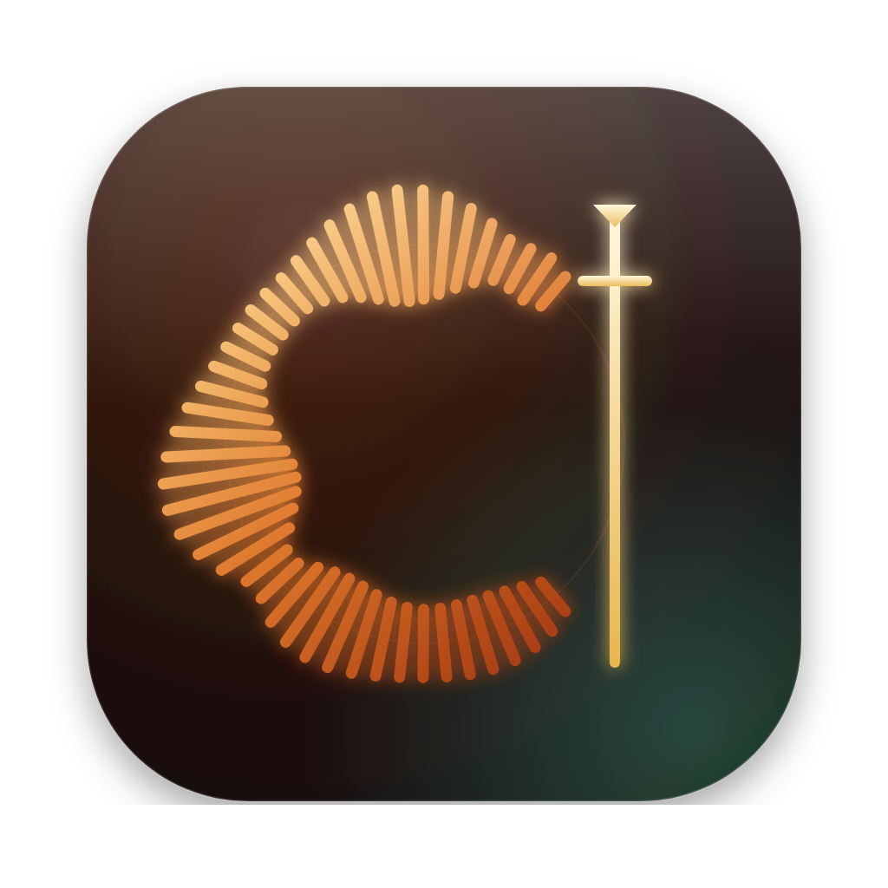

Press kit
Everything you need to write about Cantus. Use anything here freely. If something is missing, tell us.
In one paragraph
Cantus is a free, open-source digital audio workstation written in Rust and drawn by hand, in the tradition of FL Studio's workflow. It has an arrangement, a piano roll, a channel rack and a mixer; eight instruments and ten effects of its own; hosting for CLAP and VST3 plug-ins; and export to WAV, FLAC, MP3 and Ogg. It needs no account, has no telemetry, and is licensed GPL-3.0-or-later. It is in public beta for Windows. Created by Luis Ángel Almazán.
In one line
A free, open-source DAW that helps you finish the song.
Facts
| Name | Cantus, from the cantus firmus, the fixed melody on which polyphony is built |
|---|---|
| Version | 0.1.0-beta.1 |
| Platform | Windows 10 / 11 (x64). Builds for development on macOS and Linux. |
| Language | Rust; interface in English and Spanish |
| Licence | GPL-3.0-or-later |
| Audio | WASAPI and ASIO; a multicore real-time engine |
| Plug-ins | Hosts CLAP and VST3; its own effects also ship as CLAP and VST3 |
| Privacy | No account, no telemetry |
| Web | cantusdaw.com · cantusdaw.studio · github.com/luis314159/cantus-daw |
Logo



Please keep the logo's proportions and leave clear space around it equal to the width of the playhead's crossbar. Do not recolour it.
Colours and type
Headings are set in Syne and text in Instrument Sans, both under the SIL Open Font Licence.
Pictures
The program: arrangement, mixer and inspector (PNG)Share image, 1200 × 630 (PNG)


Screenshots of the effects and the manual's pictures are in the repository.
Music
The six demo songs that ship with Cantus are made with its own instruments and effects. Excerpts can be heard in the player on the home page.
Contact
Luis Ángel Almazán — lalmazan.com.